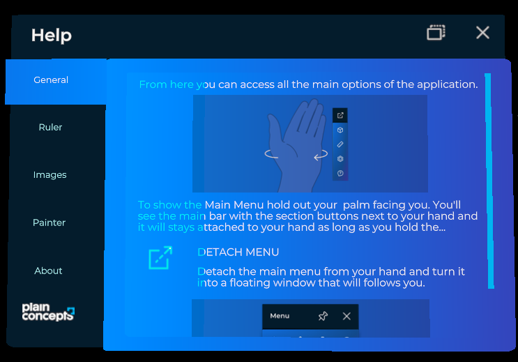

Help system

The Help window contains text and images that teach users how to use your application. It opens from the button of the hand menu and works like the settings system: each module can add its own help tab, and your code can add and remove tabs at any time. The window also includes a General tab and an About tab provided by XRV.
The window is a TabbedWindow, so each section is a tab item.
Add a help tab to a module
Set the Help property of your module in Initialize:
// Inside a class derived from Module.
public override TabItem Help { get; protected set; }
public override void Initialize(Scene scene)
{
this.Help = new TabItem
{
Name = () => "My module",
Contents = this.CreateHelpContents, // Returns the entity with the help contents.
};
}
See Create your own modules for a complete module.
Add a help tab from code
Use the HelpSystem property of XrvService:
using Evergine.Framework;
using Evergine.Xrv.Core;
using Evergine.Xrv.Core.UI.Tabs;
public class NavigationHelp : Component
{
[BindService]
private XrvService xrvService = null;
protected override void Start()
{
base.Start();
this.xrvService.HelpSystem.AddTabItem(new TabItem
{
Order = 1,
Name = () => "Getting around",
Contents = this.CreateHelpContents,
});
}
private Entity CreateHelpContents()
{
// Build or instantiate the entity with your help texts and images.
return new Entity();
}
}
HelpSystem member |
Default | Description |
|---|---|---|
AddTabItem(TabItem item) |
Adds a tab to the help window. | |
RemoveTabItem(TabItem item) |
Removes a tab from the help window. | |
DisplayAboutSection |
true |
Shows the About tab. |
AboutContents |
null |
Function that returns the text of the About tab. |
Window |
The TabbedWindow of the help. Use it to open or close the window from code. |